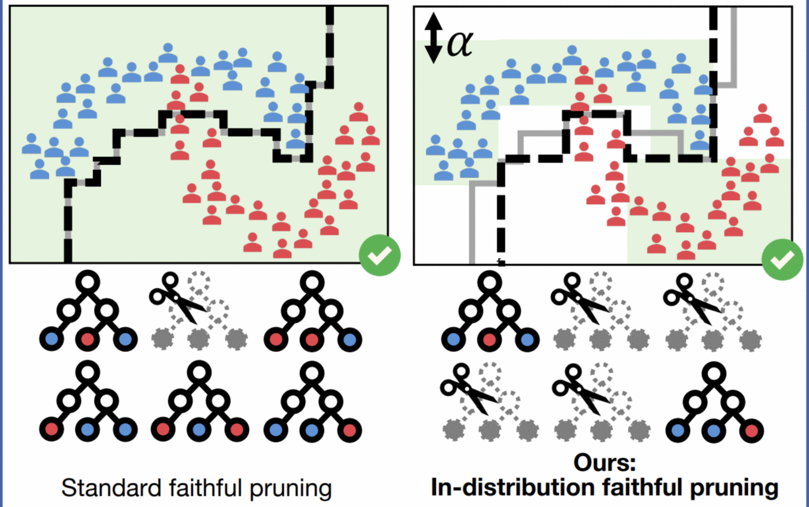
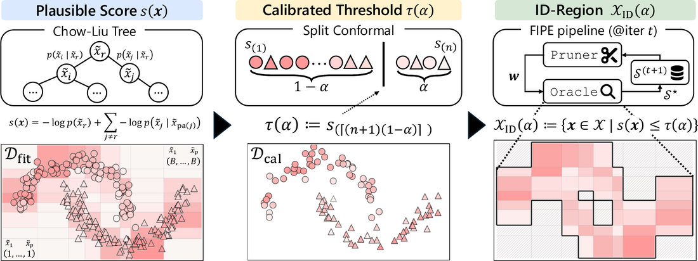
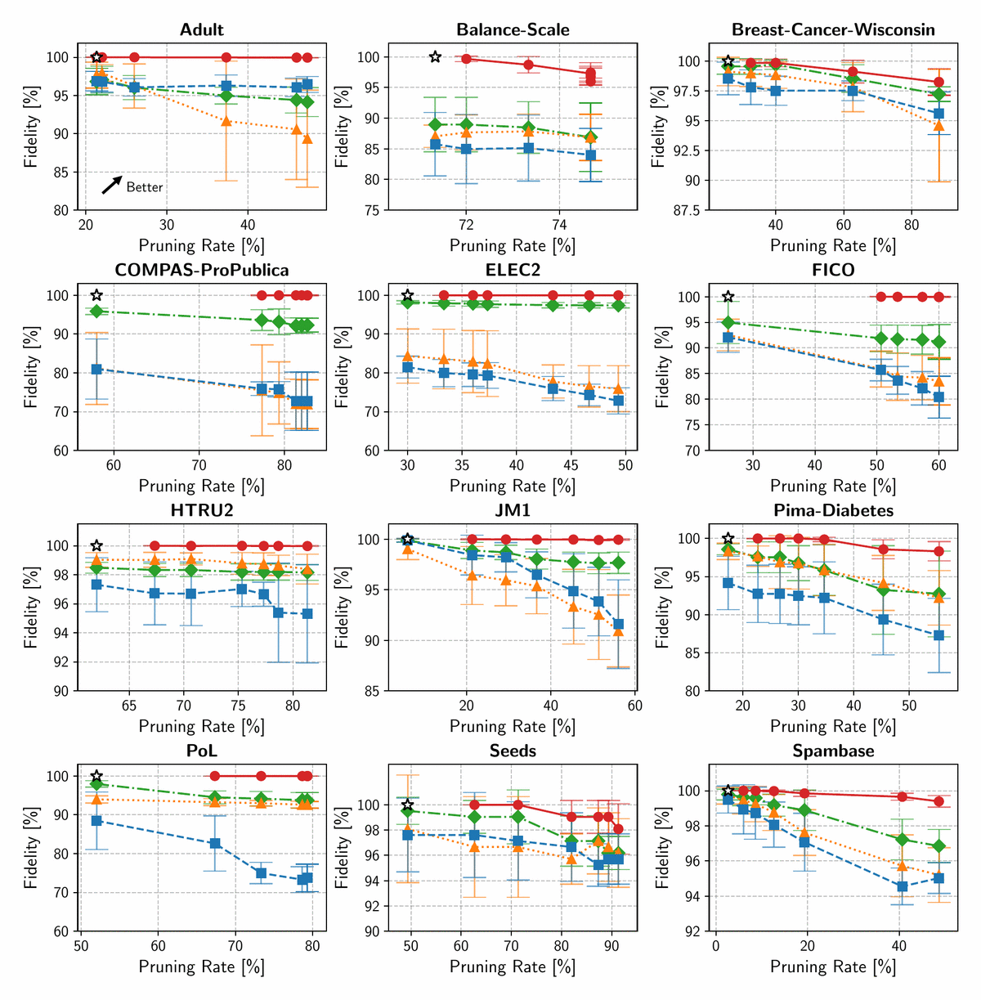
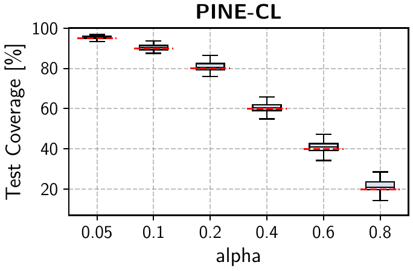

Abstract
Tree ensembles are machine learning models with strong predictive performance and interpretability, and remain widely used for tabular data. Standard pruning methods for tree ensembles typically optimize an accuracy-compression trade-off and may change a subset of predictions, potentially compromising decision consistency. Faithful pruning methods address this issue by preserving prediction equivalence over the entire input space, but this requirement leads to lower compression ratios. We propose PINE, a pruning method that provides strong guarantees within an in-distribution region. PINE preserves prediction equivalence within this region and controls the region size using a single parameter ε via conformal calibration. Experiments on 12 public tabular datasets show that PINE improves the compression ratio by up to 30% while maintaining a comparable rate of prediction equivalence to existing faithful pruning methods. As a result, PINE achieves an improved equivalence-compression trade-off.

Method
PINE keeps FIPE's iterative Pruner/Oracle structure, but restricts the Oracle to a conformal in-distribution region. A Chow-Liu tree fitted on a training split defines a negative log-likelihood score, split conformal calibration sets the threshold, and the Oracle only searches for prediction-equivalence violations inside the calibrated region.

Results
Across 12 public tabular datasets with XGBoost ensembles, PINE-CL achieves high prediction fidelity at substantially higher pruning rates than accuracy-oriented pruning baselines. The calibrated in-distribution region tracks the target coverage controlled by α, giving a direct knob for the fidelity-compression trade-off.
Fidelity-compression trade-off
PINE-CL moves the operating point toward higher pruning rates while keeping prediction fidelity close to the original ensemble. In contrast, pruning methods without prediction-equivalence constraints can preserve test accuracy yet change many individual predictions.

Conformal control of the in-distribution region
The parameter α controls how broad the certified region is. Smaller values keep a larger in-distribution region, while larger values narrow the region and allow more aggressive pruning.

BibTeX
@inproceedings{yajima2026pine,
title={PINE: Pruning Boosted Tree Ensembles with Conformal In-Distribution Prediction Equivalence},
author={Yajima, Haruki and Matsui, Yusuke},
booktitle={Proceedings of the International Conference on Machine Learning},
year={2026}
}